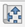
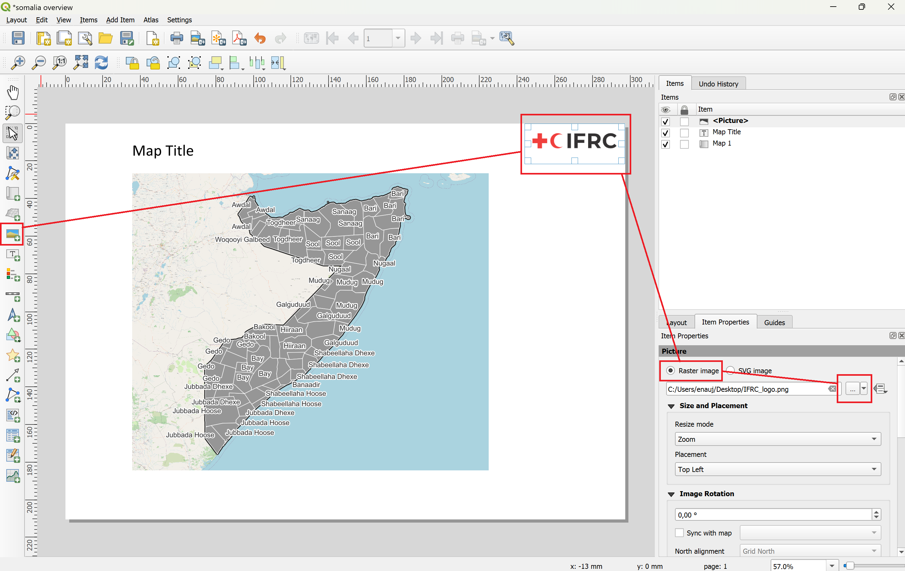

3.7. Comprensión del compositor de diseño de impresión#

Fig. 3.53 La interfaz del compositor de diseño de impresión.#
Configuración del diseño (Añadir páginas, Exportar mapa, Gestionar paneles)
Herramientas de marcación (Guardar, Nuevo, Duplicar, Añadir elementos desde plantilla, Guardar plantilla)
Barra de navegación (Aumentar, Actualizar, Bloquear/Desbloquear elementos)
Barra de herramientas (Aumentar, Seleccionar, Mover en mapa, Añadir nuevo mapa/imagen/texto/leyenda/escala/forma/…)
Panel de entidades: Muestra los elementos añadidos al diseño de impresión
Opciones avanzadas: Personaliza cada elemento de la capa
El gestor de diseños de impresión también funciona con una barra de herramientas (en la parte izquierda de la pantalla), donde se pueden seleccionar distintas herramientas (por ej.: para añadir imágenes) y paneles (en la parte derecha de la pantalla), donde se puede cambiar la configuración de las herramientas o de los elementos, que se han añadido al mapa.
En primer lugar, siempre deberá configurar el tamaño de su mapa:
Haga clic con el botón derecho en el mapa en blanco >
Page Properties.Elija el tamaño de su documento (A4, A3, A2). A4 y A3 son los tamaños más utilizados para los mapas.
Elija la orientación (Horizontal o Vertical).
3.7.1. Añadir elementos al diseño de impresión#
3.7.1.1. Añadir un nuevo mapa#
Añada un nuevo mapa haciendo clic en el

Add mapbotón de la barra de herramientas a la izquierda y arrastre un rectángulo sobre el lienzo del mapa.Para desplazar el mapa en el lienzo, basta con seleccionar el mapa y arrastrarlo con el mouse.
Para desplazarse dentro de un mapa, seleccione el botón

Move item contentde la barra de herramientas de la izquierda.Para acercar zoom sobre el mapa, mientras utiliza la herramienta
Move item content, puede presionar CTRL + desplazar la rueda del mouse (suavemente) o introducir la escala de manera manual en las propiedades del elemento.

Fig. 3.54 Añadir un nuevo mapa al diseño de impresión (fuente: CartONG).#
3.7.1.2. Añadir un título o un cuadro de texto#
El título deberá describir el fenómeno representado en el mapa.
Para añadir texto (título, explicaciones), utilice la

Add Labelherramienta y dibuje un rectángulo del tamaño deseado.En el panel Propiedades del elemento (a la derecha de su pantalla) puede introducir su texto y cambiar la fuente, el estilo, el color, etc. (Recuerde utilizar la barra de desplazamiento de la ventana para ver todas las opciones).

Fig. 3.55 Añadir texto al diseño de impresión (fuente: CartONG).#
Video: Añadir un cuadro de texto
3.7.1.3. Añadir una imagen o un logotipo#
Si trabaja para una organización, lo más probable es que añada el logotipo de esa organización en los mapas que elabore.
Haga clic en la

Add imageherramienta de la barra de herramientas de la izquierda.Arrastre un rectángulo sobre el lienzo.
En la pestaña “Item Properties”, tendrá la opción de elegir una imagen SVG de su biblioteca SVG en QGIS o elegir una imagen ráster. La mayoría de los archivos de imagen son imágenes ráster.
Seleccione
Raster imagey haga clic en...para elegir la ubicación de la imagen.Su imagen aparecerá en el diseño de impresión. Para asegurarse de que la imagen no se distorsione, deje el
Resize Modeen “Zoom”.
{kind=link}

Fig. 3.56 Añadir una imagen o logotipo al diseño de impresión.#
Video: Añadir una imagen al diseño de impresión
3.7.1.4. Añadir una leyenda#
Antes de añadir una leyenda, asegúrese de que:
Todas sus capas tengan un nombre explícito (“ríos”, “carreteras primarias”, etc.).
Utilice la versión final de su mapa (asegúrese de que no haya más capas que añadir, mover, renombrar o modificar). Puede modificarlos más tarde, pero tendrá que rehacer la leyenda.
Para añadir una leyenda, puede utilizar el botón 
Add legend de la barra de herramientas de la izquierda.

Fig. 3.57 Añadir una leyenda al diseño de impresión.#
En el panel de Propiedades de elementos, si mantiene la opción Auto update marcada, las nuevas capas añadidas a su proyecto se añadirán automáticamente a la leyenda, pero no podrá controlarlas individualmente (renombrarlas si es necesario, reordenarlas o eliminar elementos).
Una vez, desmarcada la opción, podrá actualizar el nombre de las capas, agruparlas, eliminarlas o reorganizarlas, etc.
Si tiene demasiados elementos en su leyenda y no caben en su mapa horizontalmente, también puede dividir la leyenda en varias columnas, con la navegación por el panel Propiedades de elemento, expandir la sección Columns y aumentar la Count.
A veces, el espacio de su mapa no es el adecuado para una sola leyenda vertical. En este caso, es útil añadir varias columnas. Asegúrese de agrupar los elementos de la leyenda de forma lógica para que la leyenda vertical sea más fácil de leer.
3.7.1.5. Añadir una barra de escala#
Antes de añadir una barra de escala, seleccione su mapa principal y compruebe en el panel Propiedades del elemento que el campo Scale tiene un número redondo.

Fig. 3.58 Asegúrese de que la escala sea un número redondo.#
Para añadir una barra de escala, puede utilizar el botón 
Add scale bar de la barra de herramientas de la izquierda. En el panel Propiedades del elemento, personalice las siguientes funciones:
Qué mapa está relacionado con la escala.
Sistema de unidades de la barra (metros, millas, grados).
Segmentos a la izquierda: segmentos mostrados antes de 0 m (siempre ajustados a 0).
Ancho fijo: defina el ancho de cada segmento (por ej.: 1 km, 10 km, 50 km, etc.).
Altura: altura (grosor) de la barra de escala.
Hay muchas otras opciones para personalizar la barra de escala (cambiar la fuente, los colores, etc.).

Fig. 3.59 Añadir y personalizar la barra de escala.#
3.7.1.6. Añadir un mapa general#
Añadir un mapa general en la esquina de su mapa le ayudará a localizar la zona, que está viendo en el mapa principal.
Para crear un mapa general, debe seguir estos pasos:
Asegúrese de bloquear las capas y el estilo de capa en su mapa principal.
Navegue al panel Propiedades del elemento >
Lock layersyLock styles for layers.
Prepare una capa con las fronteras nacionales o subnacionales o los puntos de referencia importantes en su proyecto (por ej.: límites administrativos, capitales). Estas no deberán ser las mismas capas que las del mapa principal. Si es necesario, puede duplicar las capas, que desee utilizar en el mapa general (como los límites administrativos). No cambie las capas de su mapa principal, si tiene intención de cambiar la simbología, más adelante.
Inserte el mapa general en su diseño de impresión, con el uso de la

Add Mapherramienta (en la esquina inferior derecha, por ejemplo).Bloquee el nuevo mapa en el panel de propiedades del elemento.
Añada un rectángulo para mostrar la extensión de su mapa principal.
Vaya a las propiedades de su mapa principal > desplácese hacia abajo hasta que vea Visión general.
Añada una visión general haciendo clic el
+botón .Vincule el mapa principal seleccionándolo en la opción
Map frame.

Fig. 3.60 Un mapa general deberá mostrar los puntos de referencia y las fronteras importantes para que el lector pueda localizar la región mostrada en el mapa, sin tener conocimientos específicos de la región.#

Fig. 3.61 Añadir un mapa general y bloquear la capa.#
Video: Configurar un mapa general
Caution
Este método requiere que esté seguro de que no va a modificar el mapa general, ya que una vez bloqueadas las capas, éstas mantendrán el estilo y cualquier actualización. no afectará al mapa general.
3.7.2. Exportar el diseño de impresión#
Una vez que haya terminado con la composición del mapa, es el momento de exportar el diseño de impresión como archivo PDF o SVG.
En la barra de herramientas encima del lienzo, haga clic en el

Export as PDFbotón .Asigne un nombre nuevo al archivo y seleccione la ubicación en la que quiere guardarlo.
Haga clic en
Save.Se abrirá una nueva ventana “PDF Export Options”. Aquí puede ajustar el algoritmo de compresión. Para obtener los mejores resultados, seleccione la compresión de imagen sin pérdida.
Haga clic en
Savede nuevo.Aparecerá una nueva barra verde, debajo de las barras de herramientas. Haga clic en el enlace del archivo para revisar el mapa exportado.
Note
Asegúrese de comprobar el mapa, después de exportar el PDF, ya que algunos elementos de diseño pueden haber cambiado en el proceso de exportación.
3.7.3. Plantillas de mapas#
Las plantillas de mapas pueden simplificar y acelerar la creación de un diseño de impresión mediante el guardado de la disposición de los elementos. Sin embargo, no guardan las capas e imágenes del proyecto, que deberán reconfigurarse todas las veces. Si trabaja para una organización, que publica mapas a menudo, o tiene que crear varios mapas sobre los mismos temas, pero en distintas regiones o épocas, puede utilizar plantillas de mapas para omitir la disposición de los elementos.
Note
Las capas,los mapas y las imágenes individuales no se guardan en la plantilla. De todos modos, si tiene las mismas capas en el proyecto en el que carga la plantilla, la leyenda se actualizará, como corresponde.
Cuando esté satisfecho con el diseño de su mapa, haga clic en el botón

Save as templatede la barra de herramientas encima del lienzo para guardarlo como una nueva plantilla.Elija la ubicación en la que desea guardarla. Lo ideal, es elegir el directorio de plantillas.
Haga clic en
Save.Puede abrir la plantilla arrastrándola a un proyecto QGIS.
Puede arrastrar y soltar archivos de plantillas (.qpt, QGIS template file) en QGIS o utilizar el gestor de diseños.
Abra el gestor de diseño en
Layout>Layout Manager.Vaya a la sección “Nueva desde la plantilla”.
Elija
Specificy seleccione la ubicación donde guardó su plantilla.Haga clic en “Open”.
El directorio de plantillas es donde QGIS almacena las plantillas de diseño. Si tiene plantillas guardadas aquí, puede cargarlas directamente a través del gestor de diseño, sin seleccionar el archivo.
En computadoras con Windows, la ruta del archivo es \Users\AppData\Roaming\QGIS\QGIS3\profiles\default\composer_templates.
Tip
El gestor de diseño de QGIS ya dispone de una ubicación dedicada a las plantillas de mapas. En computadoras con Windows, la ruta del archivo es \Users\AppData\Roaming\QGIS\QGIS3\profiles\default\composer_templates.
Si guarda las plantillas aquí, podrá cargarlas directamente a través del gestor de diseño, sin necesidad de buscar el archivo.
También puede añadir rutas de archivos en la configuración de la plantilla QGIS.
3.7.4. La función Atlas (generación automática de mapas)#
En algunos casos, puede ser necesario crear varios mapas para distintas ubicaciones con las mismas capas. Por ejemplo, si dispone de un conjunto de datos detallados sobre las zonas afectadas por las inundaciones en Nigeria, puede crear un mapa, más detallado, para cada distrito subnacional. En QGIS, esto puede hacerse automáticamente con la función Atlas.
La función Atlas se encuentra en el Compositor de diseños de impresión en la barra de herramientas.

Fig. 3.62 La barra de herramientas de Atlas.#
Note
Si no puede ver las herramientas del Atlas, primero debe activar la barra de herramientas del Atlas en View > Toolbars > Atlas Toolbar.
3.7.4.1. Generar un Atlas#
Un atlas generará una nueva página, con el mismo diseño de mapa para cada entidad de una capa. Para la mayoría de los propósitos, es útil crear primero, un diseño de mapa con los elementos como leyenda, fuentes y mapa general y luego insertar el elemento de mapa, que será controlado por el Atlas. Para generar un atlas:
Haga clic en el

Atlas Settingsbotón de la barra de herramientas del Atlas.En la nueva ventana, active la
Generate an Atlasopción .Seleccione
Coverage Layer. Esto determinará las entidades o polígonos, que se mostrarán en una página. En nuestro ejemplo, utilizaremos las regiones administrativas subnacionales de Nigeria (ADM1).Seleccione
Page Name. Deberá ser el nombre de la región o localidad subnacional, que aparece en esa página. Para mostrar el nombre de la región, elegiremos la columnaADM1_REF, que contiene los nombres de las regiones en inglés.Ahora vamos a añadir un mapa al diseño de impresión vacío.
Haga clic en el mapa y navegue hasta la ventana Propiedades de la capa a la derecha.
Desplácese hacia abajo hasta que vea la opción
Controlled by Atlasy actívela.Active ahora la vista previa del Atlas en la barra de herramientas del Atlas. De lo contrario, el diseño de impresión no se actualizará para mostrarle la página del atlas. Puede hacer clic en cada página para ver su aspecto. Dependiendo de la cantidad de entidades de su mapa, podrían tardar un poco en reproducirse.
Ahora puede ajustar las opciones de margen para adaptar mejor la legibilidad del mapa. Por defecto, está configurado al 10 %, lo que debería bastar para la mayoría de los propósitos.
Antes de imprimir o exportar el atlas, asegúrese de verificar en cada página, que los otros elementos del mapa, no cubran la región representada.
Note
El único elemento del diseño de impresión, que es controlado por el atlas, es el mapa que hemos añadido (a menos que especifique lo contrario, en las propiedades del elemento). Los demás elementos del mapa serán los mismos en todas las páginas.
Video: Configurar un Atlas
3.7.5. Preguntas de autoevaluación#
Ponga a prueba sus conocimientos
¿Cómo se crea o se abre un diseño en QGIS?
Respuesta
En QGIS, ir a
Project→New Print Layoutpara crear un nuevo diseño.Se abrirá el compositor de diseños de impresión, una nueva ventana en la que podrá empezar a componer el diseño del mapa.
Si ya se tienen diseños guardados en este proyecto, puede abrirlos a través del gestor de diseño (
Project→Layout Manager), donde habrá una lista de los diseños existentes.Además, puede crear un diseño, a partir de un archivo de plantilla a través del gestor de diseños (nuevo desde plantilla) si se ha guardado un
.qptarchivo.
¿Cuál es la diferencia entre el “elemento de mapa” (marco de mapa) dentro de un diseño y el lienzo del mapa principal de QGIS?
Respuesta
El elemento de mapa en el compositor de diseño de impresión es una del lienzo del mapa en la ventana principal de QGIS y muestra las capas tal y como aparecen en la ventana principal.
En el lienzo del mapa principal, puede interactuar con los datos, mientras, que en el compositor de diseños de impresión, solo se pueden ver los datos.
El elemento de mapa muestra el mapa tal y como está en el lienzo del mapa (podría tener que actualizar el elemento de mapa para mostrar la simbología modificada), a menos que bloquee las capas y los estilos de capas para el elemento de mapa específico. ::
¿Cómo se bloquea la capa de un mapa que se ha añadido al diseño de impresión?
Respuesta
El bloqueo es esencial, si quiere que el elemento de mapa del diseño, conserve exactamente lo que se ha establecido, incluso si más tarde, se cambian cosas en el proyecto.
Seleccionar el elemento de mapa en el compositor de diseños de impresión
En el__panel de propiedades de elemento__, hay una opción para bloquear capas y estilos para ese mapa.
Una vez bloqueado, puede cambiar el orden de las capas o la simbología de las capas en la ventana principal de QGIS, sin cambiar el mapa en el diseño de impresión.